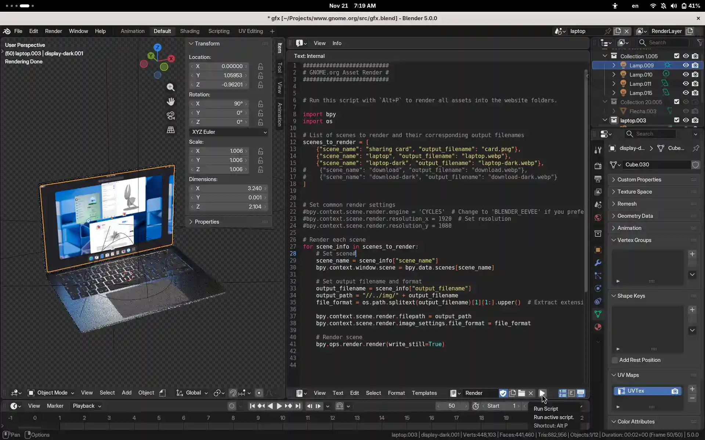

12 months instead of 12 minutes
Hey Kids! Other than raving about GNOME.org being a static HTML, there's one more aspect I'd like to get back to in this writing exercise called a blog post.

I've recently come across an apalling genAI website for a project I hold deerly so I thought I'd give a glimpse on how we used to do things in the olden days. It is probably not going to be done this way anymore in the enshittified timeline we ended up in. The two options available these days are — a quickly generated slop website or no website at all, because privately owned social media is where it's at.
The wanna-be-catchy title of this post comes from the fact the website underwent numerous iterations (iterations is the core principle of good design) spanning over a year before we introduced the redesign.
So how did we end up with a 3D model of a laptop for the hero image on the GNOME website, rather than something generated in a couple of seconds and a small town worth of drinking water or a simple SVG illustration?
The hero image is static now, but used to be a scroll based animation at the early days. It could have become a simple vector style illustration, but I really enjoy the light interaction of the screen and the laptop, especially between the light and dark variants. Toggling dark mode has been my favorite fidget spinner.
Creating light/dark variants is a bit tedious to do manually every release, but automating still a bit too hard to pull off (the taking screenshots of a nightly OS bit). There's also the fun of picking a theme for the screenshot rather than doing the same thing over and over. Doing the screenshooting manually meant automating the rest, as a 6 month cycle is enough time to forget how things are done. The process is held together with duct tape, I mean a python script, that renders the website image assets from the few screenshots captured using GNOME OS running inside Boxes. Two great invisible things made by amazing individuals that could go away in an instant and that thought gives me a dose of anxiety.

This does take a minute to render on a laptop (CPU only Cycles), but is a matter of a single invocation and a git commit. So far it has survived a couple of Blender releases, so fingers crossed for the future.
Sophie has recently been looking into translations, so we might reconsider that 3D approach if translated screenshots become viable (and have them contained in an SVG similar to how os.gnome.org is done). So far the 3D hero has always been in sync with the release, unlike in our Wordpress days. Fingers crossed.